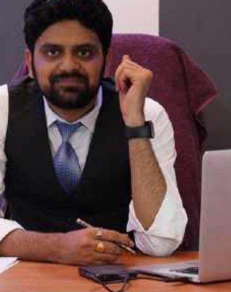
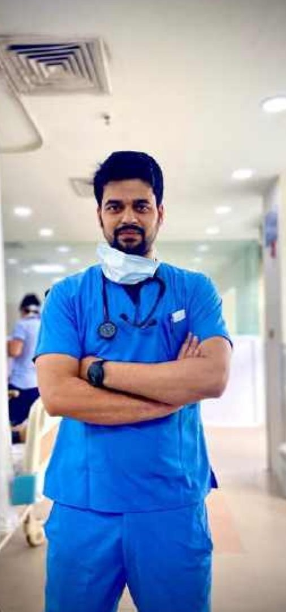
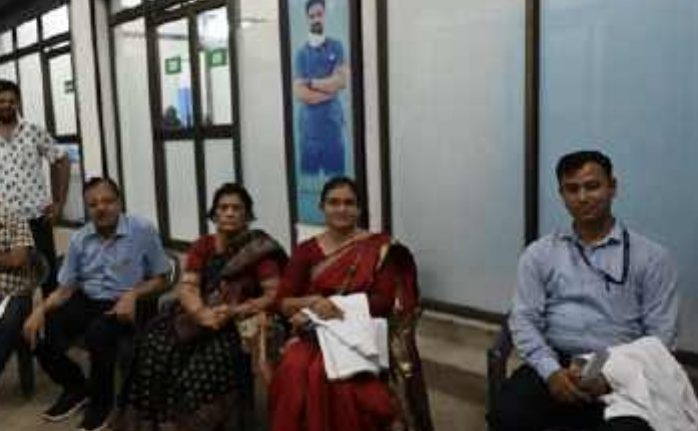
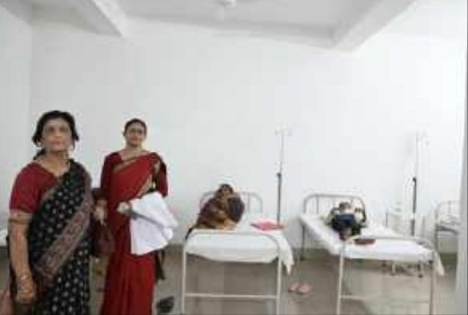

Caring is a skill. We teach it.
AHS Nursing College & Hospital is a unit of Sir Syed Educational & Charitable Trust, Samastipur, Bihar.

A nursing college with its own hospital.
AHS Nursing College & Hospital is run by Sir Syed Educational & Charitable Trust. Our ANM, GNM and B.Sc Nursing programmes are approved by the Indian Nursing Council, affiliated to Bihar University of Health Sciences, approved by the Bihar Nurses Registration Council and recognised by the Health Department, Government of Bihar.
Students learn in ten specialised labs and train at our parent hospital, AHS Global Hospital, along with government hospitals and community health centres across the region.
Vision, mission and values.
Our vision
To deliver world class, holistic and affordable healthcare and to build a dynamic institution that focuses on the development of people and new knowledge.
Our mission
To be the ultimate healthcare destination.
Our values
Compassion, Transparency, Innovation and Inclusion.
“Education is not merely a destination, but a lifelong journey.”
Anzarul Haque Sahara
Founder Chairman · Senior Advocate, Patna High Court, Patna, Bihar
Dear Students,
At AHS Nursing College & Hospital, we envision education as more than the acquisition of knowledge — it is the journey of self-discovery, character-building, and the nurturing of values that shape compassionate and responsible professionals. Our mission is to create an environment where learning, creativity, and empathy go hand in hand, preparing you not only to excel in your chosen field but also to contribute meaningfully to society.
Every initiative, every program, and every interaction at AHS is designed to broaden your perspective, challenge your intellect, and ignite the spirit of inquiry. We believe in fostering curiosity, critical thinking, and leadership while respecting the individuality and unique potential of each student. The opportunities here, from clinical exposure in renowned hospitals to engaging in cultural, social, and research activities, are meant to cultivate a holistic understanding of life, profession, and humanity.
Remember, education is not merely a destination, but a lifelong journey. At AHS, we guide you to embrace that journey with passion, integrity, and dedication. I urge you to immerse yourself fully in all experiences offered here, for it is these moments that will shape the person you become and the difference you will make in the world.
I extend my heartfelt wishes for your success, growth, and fulfilment during your time at AHS Nursing College.

Gauhar Haque Sahara
Managing Director, AHS Nursing College
Dear Students,
Congratulations on becoming a part of AHS Nursing College — an institution that stands out not only for its academic excellence but also for its vibrant and aesthetically designed campus, enriched with diverse cultural, artistic, and intellectual activities. At AHS, learning goes far beyond the classroom. From music, theatre, and art to national and international conferences and interactions with eminent personalities, every experience is designed to shape your overall personality and broaden your horizons.
Our curriculum and co-curricular programs are thoughtfully crafted to encourage critical thinking, creativity, and problem-solving rather than mere rote learning. With over 100 affiliated multi-speciality hospitals, medical colleges, and research centres across the country and abroad, AHS provides a strong platform for clinical exposure, innovation, and global learning opportunities.
We believe that every student is unique and possesses individual strengths. Our mission is to nurture your talents, support your aspirations, and help you transform into compassionate, competent, and confident healthcare professionals. I urge each one of you to actively participate in all curricular, co-curricular, and extracurricular activities — because every experience here will contribute to your growth and make your journey at AHS truly memorable.
I wish you all a rewarding and joyful learning experience at AHS Nursing College.
AHS Global Hospital
A well-known 100+ bed hospital in the Samastipur region under Sir Syed Educational & Charitable Trust, with a team of doctors and specialists.
- 24-hour emergency and OPD services — Medical, Surgical, Obstetrics & Gynaecology, Ophthalmology, Paediatrics, Psychology and more
- Day-care admission with maternity care, newborn care, vaccination, a well-equipped labour room and pathology
- Community services — door-to-door primary healthcare, health awareness programmes and health check-up camps
- A comprehensive eye care clinic — refraction, orthoptic evaluation, contact lenses and low vision aids



Government affiliated hospitals
Hands-on clinical training across medical specialties, as per the guidelines of the Indian Nursing Council and the Bihar Nurses Registration Council.
| Hospital | Beds | Established by |
|---|---|---|
| Sri Ram Jaanki Medical College & Hospital Narghoghi, Sarairanjan, Bihar 848127 | 500+ | Government of Bihar |
| ECR Divisional Railway Hospital Railway Colony, Samastipur, Bihar | 130+ | Indian Railways, Govt. of India (est. 1930) |
| Bihar State Institute of Mental Health and Allied Sciences Koilwar, Bhojpur, Bihar 802160 | 320+ | Government of Bihar |
| Sadar Hospital, Samastipur Opp. Circuit House, Samastipur, Bihar | 130+ | Government of Bihar |
| Ranchi Institute of Neuro-Psychiatry and Allied Sciences (RINPAS) Kanke, Ranchi, Jharkhand | 500+ | Government of Jharkhand |
| Jan Nayak Karpuri Thakur Referral Hospital Tajpur, Samastipur, Bihar | 50+ | Government of Bihar |
Community health centres
Field postings for health camps, immunisation drives and maternal-child health programmes.
| Centre | Location |
|---|---|
| Community Health Centre (CHC) | Opp. Circuit House, Samastipur |
| Community Health Centre (CHC) | Tajpur, Samastipur |
| Primary Health Centre (PHC) | Pusa, Samastipur |
| Primary Health Centre (PHC) | Kalyanpur, Samastipur |
| Additional Primary Health Centres (APHC) | Bikrampur Banday, Shambhopatti, Karpurigram, Dudhpura, Nirpur |
Ready to begin your nursing journey?
Admissions are open for ANM, GNM and B.Sc Nursing. Talk to our admission team today.